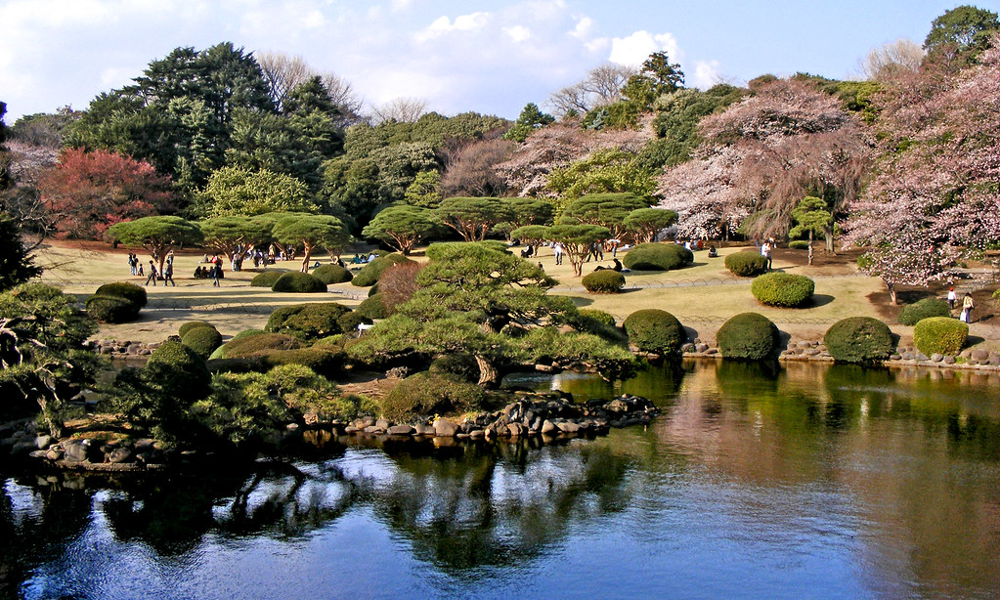

Yashin’s environment is often bustling. He resides in his village among his other clan members. There is one primary ritual that occurs in his village where he and the other members give praise to their deity who they believe has blessed them with the land. The weather conditions he encounters varies primarily between sunny days and spots of rain. In his everyday life, Yashin can hear conversations between fellow clan members, the sounds of various animals, rushing water and the occasional clashing of swords between sparring with his clan members or any battles that may occur.
